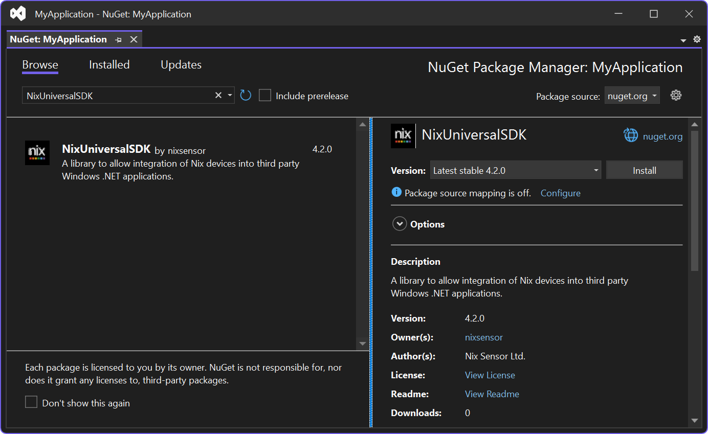

Adding to Your Visual Studio Project
The Nix Universal SDK is provided as a NuGet package. The provided nupkg file can be added to a local NuGet feed, or you may install from the public nuget.org repository.
Tip
The latest stable version of the Nix Universal SDK is hosted on nuget.org. It is recommended to install from this source.
Adding the package reference
- In Visual Studio, right-click on your project and select 'Manage NuGet Packages'.
- Select the default feed ('nuget.org') as the 'Package source', located at the top right of the NuGet Package Manager.
- Select the 'Browse' tab in the NuGet Package Manager.
- Search for the
NixUniversalSDKpackage. Select the package from the search results. - Click on
Installto add to your project.

Updating your UWP or WinUI manifest
If your Windows application is a packaged UWP or WinUI app, it is necessary to add Bluetooth and serial device capabilities to the App package manifest.
Tip
If your application already runs with 'full trust', or is unpackaged, you can skip this step.
- An overview of declaring device capabilities in an app manifest is provided by Microsoft here
- The specific capabilities required by the Nix Universal SDK are listed below:
<Capabilities>
<!-- Existing capabilities here -->
<!-- ... -->
<!-- Nix required capabilities -->
<DeviceCapability Name="bluetooth.genericAttributeProfile">
<Device Id="any">
<Function Type="name:00001800-0000-1000-8000-00805f9b34fb"/>
<Function Type="name:00001801-0000-1000-8000-00805f9b34fb"/>
<Function Type="name:0000180a-0000-1000-8000-00805f9b34fb"/>
<Function Type="name:0000180f-0000-1000-8000-00805f9b34fb"/>
<Function Type="name:0000fe59-0000-1000-8000-00805f9b34fb"/>
<Function Type="name:bebc4000-c4ba-e4a6-4422-dbb176d3a537"/>
<Function Type="name:72d51000-b0da-4368-952f-dd2a64db5b61"/>
</Device>
</DeviceCapability>
<DeviceCapability Name="serialcommunication">
<Device Id="any">
<Function Type="name:serialPort"/>
</Device>
</DeviceCapability>
</Capabilities>
Runtime directives
The SDK attempts to improve Bluetooth throughput by setting certain parameters on the Windows.Devices.Bluetooth.BluetoothLEDevice class via reflection. If your .NET project uses code trimming, it is recommended to include the following runtime directives enable this feature.
Tip
If you are not using code-trimming, you can skip this step.
Caution
Failure to include these runtime directives may cause slower than expected Bluetooth performance when using code trimming.
- Add an XML file
xml/rd.xmlto your project with the following contents
<?xml version="1.0" encoding="utf-8" ?>
<Directives xmlns="http://schemas.microsoft.com/netfx/2013/01/metadata">
<Library>
<Assembly Name="Microsoft.Windows.SDK.NET">
<!-- NixUniversalSDK requests higher throughput BLE modes on Windows 11 -->
<!-- This uses reflection at runtime on BluetoothLEDevice and BluetoothLEPreferredConnectionParameters -->
<!-- Include runtime directives to keep these classes to allow higher BLE performance on Windows 11 -->
<Type Name="Windows.Devices.Bluetooth.BluetoothLEDevice" Dynamic="Required All" />
<Type Name="Windows.Devices.Bluetooth.BluetoothLEPreferredConnectionParameters" Dynamic="Required All" />
</Assembly>
</Library>
</Directives>
- Reference the runtime directives file from within your
.csprojfile:
<Project Sdk="Microsoft.NET.Sdk">
<!-- Existing file contents -->
<!-- ... -->
<!-- Runtime directives -->
<!-- These define class metadata to keep after trimming, allowing for reflection -->
<ItemGroup>
<RdXmlFile Include="xml/rd.xml" />
</ItemGroup>
</Project>